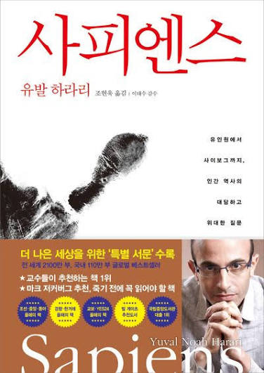

제3부 「인류의 통합」으로 들어갑니다. 이번 주는 장마다 나누지 않았습니다. 물음 하나를 세우고, 네 장을 그 물음으로 읽습니다. 다 채우지 않으셔도 괜찮습니다.
돈, 제국, 종교는 서로 모르는 사람들을 어떻게 하나로 묶었을까요? 그 묶음은 모두에게 좋았을까요?
문화는 제자리에 머물지 않습니다. 하라리는 긴 눈으로 보면 역사가 작은 문화들이 큰 문화로 합쳐지는 쪽으로 흘러왔다고 말합니다.
“이 시각에서 보면 역사가 통일을 향해 끊임없이 움직이고 있다는 사실은 명약관화하다.”
돈은 말도 신도 다른 사람들끼리 거래하게 만든 믿음입니다. 다만 그 믿음이 향하는 곳은 사람이 아닙니다.
“우리는 이방인이나 이웃집 사람을 신뢰하는 게 아니라 그들이 지닌 주화를 신뢰할 뿐이다. 그들에게서 주화가 떨어지면 우리의 신뢰도 사라진다.”
제국은 서로 다른 민족들을 한 질서 아래 두었습니다. 하라리는 제국이 내건 약속과 그 약속의 끝을 함께 적습니다.
“인류는 하나의 대가족으로 인식되었고, 부모의 특권은 자녀의 복지에 대한 책임과 함께 존재하는 것이었다.”
“진실로 보편적이었던 제국, 모든 인류에게 유익했던 제국은 단 하나도 없었다. 앞으로의 제국은 잘 해낼 수 있을까?”
종교는 사람이 세운 질서에 사람보다 높은 근거를 주었습니다. 넓은 땅을 묶으려면 조건이 둘 더 필요했습니다.
“첫째, 언제 어디서나 진리인 보편적이고 초인적인 질서를 설파해야 한다. 둘째, 이 믿음을 모든 사람에게 전파하라고 강력히 요구해야 한다.”
하라리는 정찰위성의 눈으로 수천 년을 내려다보면 역사가 통일을 향해 움직인다고 말합니다. 내가 살아오는 동안 세상이 서로 닮아 간다고 느낀 것은 무엇인가요. 그 가운데 반가운 것 하나와 아쉬운 것 하나를 적어 주세요.
하라리는 돈을 두고, 우리는 이웃을 믿는 것이 아니라 “그들이 지닌 주화를 신뢰할 뿐”이라고 말합니다. 이 말에 동의하시나요, 아니면 걸리는 데가 있나요?
하라리는 모든 인류에게 유익했던 제국은 단 하나도 없었다고 적은 뒤 “앞으로의 제국은 잘 해낼 수 있을까?” 하고 묻습니다. 이 물음에 무엇이라고 답하시겠어요.
널리 퍼진 종교는 자기 믿음을 모든 사람에게 전하라고 요구했습니다. 내가 옳다고 믿어 남에게도 권해 본 것 하나를 떠올려 주세요. 책, 운동, 신앙, 생활 습관 무엇이든 좋습니다. 그때 상대는 어떻게 받았나요.
한 주를 마치며, 좋은 문장 하나와
그 문장에 대한 내 생각을 적어 올려 주시면 좋겠습니다.
4주차 10/12(월)~10/16(금) · 13~17장
BOOK — 유발 하라리 『사피엔스』 · 김영사 · 조현욱 옮김 · 전 20장
WEEK — 3 / 5 · 하루 한 챕터 · 벽돌책 완독 챌린지 5기
NOTE — 밑줄 위 한 줄 풀이는 진행자의 읽기입니다 · 밑줄은 진행자가 그은 자리이고, 여러분의 밑줄은 다를 수 있습니다